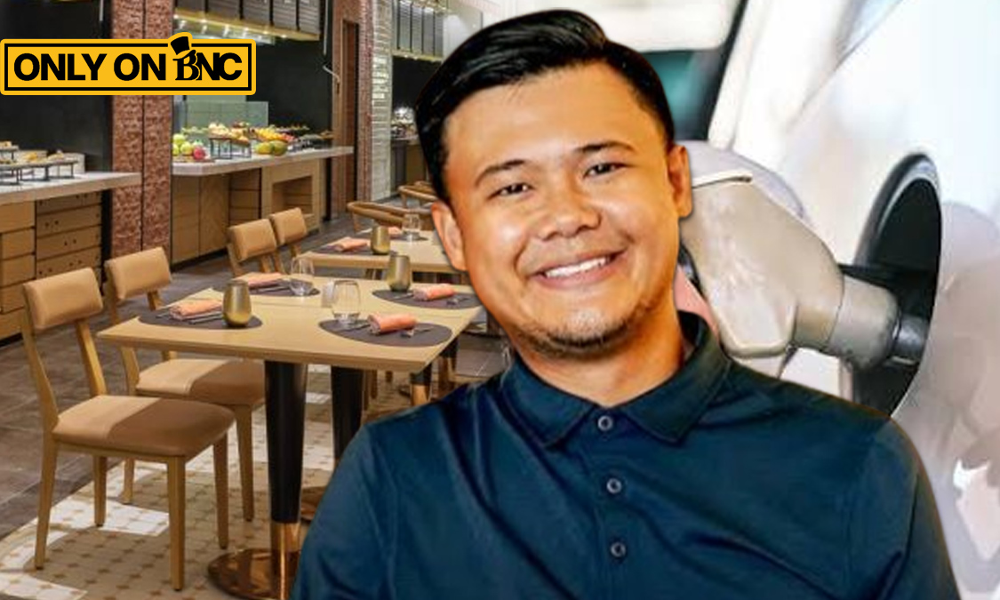

RestoPH: restaurants are now competing with gas stations for Filipinos' budget
22 Nov 2026 · Bilyonaryo News Channel
David Sison, president of the Restaurant Owners of the Philippines Association (RestoPH), told BNC's "Follow the Money" that pressure on the industry started in February, when the Iran war pushed fuel prices up. Diners have become more careful with money and want better value. That forces operators, especially small ones, to rethink what they offer. His line: during Covid you had to pivot to delivery, and now you have to pivot to real value. He called the sector very competitive because it is easy to enter, which makes it hard to stay in business.
Operator read: fuel works on you twice. It raises your own costs (deliveries, staff transport, LPG-adjacent prices), and it leaves the customer less to spend. Value doesn't have to mean cheaper. It can be a protected solo set, an honest portion, or a bundle with a price people remember, while the top of the menu keeps its margin. For an opener, the easy entry Sison describes cuts both ways. Weak concepts will close through Q1, so second-generation restaurant spaces with kitchens already fitted will come up at better terms. Be ready with cash rather than a fit-out budget.